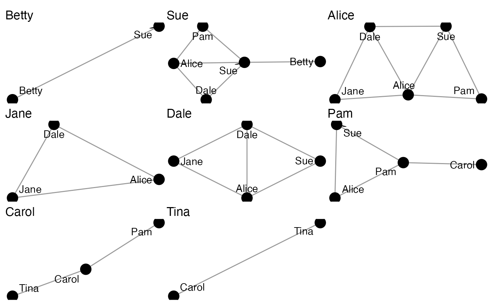
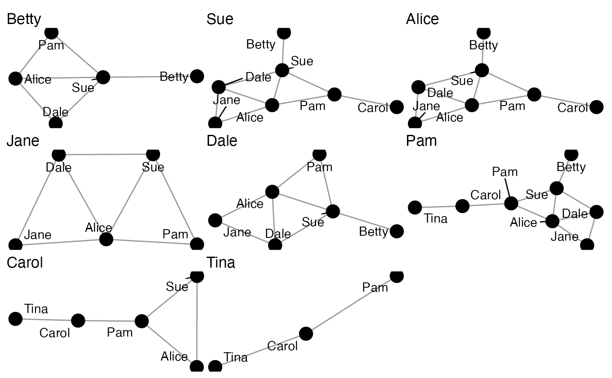

These functions offer tools for splitting migraph-consistent objects (matrices, igraph, tidygraph, or network objects). Splitting means that the returned object will be a list of objects.
to_egos(object, max_dist = 1, min_dist = 0)
to_subgraphs(object, attribute)
to_components(object)An object of a migraph-consistent class:
matrix (adjacency or incidence) from {base} R
edgelist, a data frame from {base} R or tibble from {tibble}
igraph, from the {igraph} package
network, from the {network} package
tbl_graph, from the {tidygraph} package
The maximum breadth of the neighbourhood. By default 1.
The minimum breadth of the neighbourhood. By default 0. Increasing this to 1 excludes the ego, and 2 excludes ego's direct alters.
A character string indicating the categorical attribute in a network used to split into subgraphs.
to_egos(): Returns a list of ego (or focal)
networks.
to_subgraphs(): Returns a list of subgraphs
on some given attribute.
to_components(): Returns a list of the components
in a network.
autographs(to_egos(ison_adolescents))

autographs(to_egos(ison_adolescents,2))

to_components(ison_marvel_relationships)
#> [[1]]
#> # A tbl_graph: 50 nodes and 558 edges
#> #
#> # An undirected multigraph with 1 component
#> #
#> # Node Data: 50 × 10 (active)
#> name Gender Appeara… Attract… Rich Intelle… Omnili… PowerO… Unarme… ArmedC…
#> <chr> <chr> <int> <int> <int> <int> <int> <chr> <int> <int>
#> 1 Abomi… Male 427 0 0 1 1 Radiat… 1 0
#> 2 Ant-M… Male 589 1 0 1 0 Human 1 0
#> 3 Apoca… Male 1207 0 0 1 1 Mutant 1 1
#> 4 Beast Male 7609 1 0 1 0 Mutant 1 0
#> 5 Black… Male 2189 1 1 1 0 Human 1 1
#> 6 Black… Female 2907 1 0 1 0 Human 1 1
#> # … with 44 more rows
#> #
#> # Edge Data: 558 × 3
#> from to sign
#> <int> <int> <dbl>
#> 1 1 4 -1
#> 2 1 10 -1
#> 3 1 11 -1
#> # … with 555 more rows
#>
#> [[2]]
#> # A tbl_graph: 1 nodes and 0 edges
#> #
#> # An unrooted tree
#> #
#> # Node Data: 1 × 10 (active)
#> name Gender Appearances Attrac… Rich Intell… Omnili… PowerO… Unarme… ArmedC…
#> <chr> <chr> <int> <int> <int> <int> <int> <chr> <int> <int>
#> 1 Cable Male 2734 0 0 1 0 Mutant 1 1
#> #
#> # Edge Data: 0 × 3
#> # … with 3 variables: from <int>, to <int>, sign <dbl>
#>
#> [[3]]
#> # A tbl_graph: 1 nodes and 0 edges
#> #
#> # An unrooted tree
#> #
#> # Node Data: 1 × 10 (active)
#> name Gender Appear… Attrac… Rich Intell… Omnili… PowerO… Unarme… ArmedC…
#> <chr> <chr> <int> <int> <int> <int> <int> <chr> <int> <int>
#> 1 Iron Fist Male 1789 0 1 1 0 Human 1 1
#> #
#> # Edge Data: 0 × 3
#> # … with 3 variables: from <int>, to <int>, sign <dbl>
#>
#> [[4]]
#> # A tbl_graph: 1 nodes and 0 edges
#> #
#> # An unrooted tree
#> #
#> # Node Data: 1 × 10 (active)
#> name Gender Appear… Attrac… Rich Intell… Omnili… PowerO… Unarme… ArmedC…
#> <chr> <chr> <int> <int> <int> <int> <int> <chr> <int> <int>
#> 1 Luke Cage Male 2466 0 0 0 0 Human 1 0
#> #
#> # Edge Data: 0 × 3
#> # … with 3 variables: from <int>, to <int>, sign <dbl>
#>